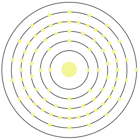

Name: Gold
Formula: Au
Atomic Number: 79
Group: 11
Block: d
Period: 6
Relative Atomic Mass: 196.967
Discovery Date: Approx. 3000BC
Appearance: A soft metal with a characteristic yellow colour.
Uses: Stored as bullion. Jewellery, coinage, art, dentist creating gold fillings, industrial catalysts.


Atomic Structure:
